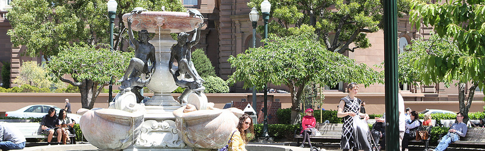
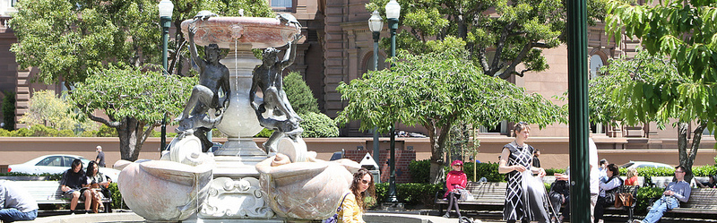

San Francisco Police Department, Central Station
766 Vallejo St.
San Francisco, CA 94133
415-315-2400
Email: SFPDCentralStation@sfgov.org
Emergency, dial: 911
Non-emergency, dial: (415) 553-0123
TIP LINE: (415) 392-2623
San Francisco Fire Department
SFFD Station 41
1325 Leavenworth St.
San Francisco, CA 94107 (Nob Hill)
www.sfgov.org/site/sffd_index.asp
Saint Francis Memorial Hospital
Saint Francis Memorial Hospital
900 Hyde St
San Francisco, CA 94109
(415) 353-6000
Mayor's Office of Neighborhood Services (Nob Hill Area)
For information regarding libraries, post offices, schools, health care facilities, street sweeping schedules, all City services.
On the web: http://www.facebook.com/SFMONS
SF Board of Supervisors: David Chiu, Supervisor, District 3
State Assembly: Tom Ammiano (D)
State Senate: Mark Leno (D)
U.S. House: Nancy Pelosi (D)
Nob Hill Association Business Partners: Rewards Program Partners
San Francisco Parks and Recreation Department:
Huntington Park
California & Taylor
San Francisco, CA 94108
http://sfrecpark.org/
Cable Car Information:
http://www.sfcablecar.com/routes.html
Dial 3-1-1 to report issues at Huntington Park.
Send ideas for park improvements through the website at www.parkscan.org
San Francisco Cable Car Museum: http://www.cablecarmuseum.org
Chinese Historical Society of America: www.chsa.org/
Grace Cathedral: www.gracecathedral.org/
Fairmont Hotel, Mark Hopkins, Stanford Court, Huntington, Ritz Carlton
Photographer: Ron Henggeler: www.ronhenggeler.com/
Nob Hill and San Francisco History: http://www.sfhistory.org/
Barbary Coast Trail: http://www.barbarycoasttrail.org/trail_map.htm
Books:
San Francisco's Nob Hill, Katherine Powell Cohen
Fire and Gold, The San Francisco Story, Charles Fraccia, Historian